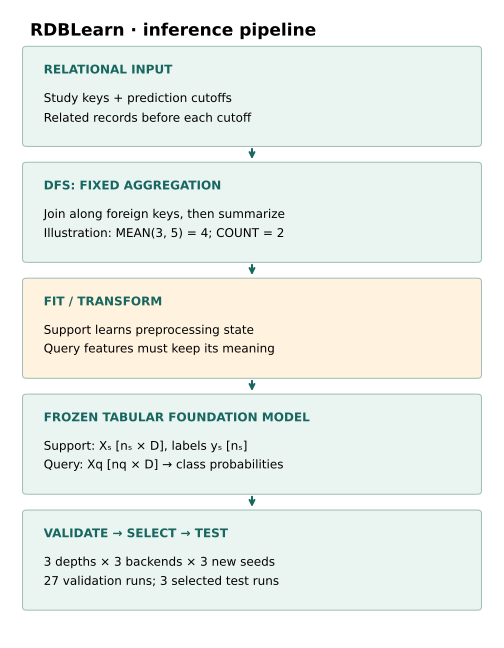
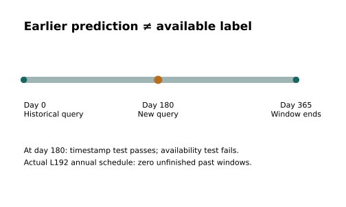
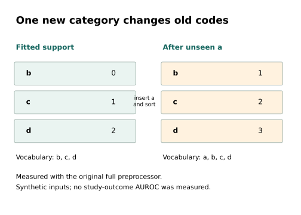

Year5 · Quarter4 · Lesson192
Open FM reproduction: setup & data
A published number begins with stable inputs
The win: know what you are about to reproduce¶
A reproducible score begins with a reproducible input to the model. Today you will trace one open relational prediction pipeline, authenticate its task rows, and decide whether its source can safely enter a full validation search.
Your tangible deliverable is a reproduction admission record: the named target, fixed inputs, complete search schedule, verified invariants, and an evidence-based decision to run or stop. This serves the mission: a thesis about relational models needs comparisons whose inputs retain the same meaning.
Bridge. Lesson 178 showed that matched support sizes do not guarantee matched information. Lesson 190 separated research ideas from established evidence. Lesson 191 audited published commercial-versus-open comparisons. Here we inspect the inputs for a selected open-model reproduction. Lesson 193 extends its contract to all reported tasks; the source gate found here must be resolved before either model search can run.
INCOMPLETE_SOURCE_PREPROCESSING_GATE. Model evaluations: 0. New cloud/API spend: $0. Learner: PENDING_WRITTEN_DEFENSE.1 · Choose a result, not a model name¶
Named experiment. RDBLearn on RelBench rel-trial/study-outcome, targeting 0.7167 AUROC in the toolkit paper’s Table 1. Its Table 4 names depth 4 with TabPFN-v2 as the selected configuration. We attempt the complete selected-task search instead of assuming that reported winner will win again. Read the primary paper’s §5 and Appendix A.
AUROC is the probability that a randomly drawn positive example receives a higher score than a randomly drawn negative example, with half credit for a tie. It ranges from 0 to 1. The positive label here is achievement of a primary outcome as defined by the released task SQL. AUC is not accuracy at a chosen decision threshold.
RDBLearn combines deterministic relational features with a pretrained tabular predictor. Deterministic means the aggregation has no learned weights. In-context learning, or ICL, means the predictor conditions on labeled support examples rather than fitting new neural weights for this task. Setting up support is still commonly called fit in the software API.
Scope check. “Best open” is the curriculum’s selection goal, not a global ranking certified here. RDBLearn is an open FM-based pipeline; it does not pretrain a new relational foundation model. Source availability, checkpoint access, inference reproduction and reproducing pretraining are different claims.
2 · Model architecture: database → features → frozen predictor¶
Follow the computation
A frozen predictor still depends on a stable fitted map
- 1
Choose study keys and cutoffs
Collect the permitted relational history for each question.
- 2
Construct DFS features
Follow key paths and aggregate; for example mean(3,5) = 4 and count = 2.
- 3
Fit once; preserve meaning
Support and query must use the same fitted preprocessing map.
- 4
Call the selected frozen backend
Labeled support plus query features produce predictions only after the preprocessing gate passes.
Open the decisive operation
If b was encoded as 0 during support fitting, may it become 1 after seeing a new query category?
No. That changes the meaning of an existing coordinate/code. The measured instability blocks backend admission here.
Trace answer: No. That changes the meaning of an existing coordinate/code. The measured instability blocks backend admission here.
Source diagnostic on synthetic categories. Backend inference and the full model search remain unrun.


Input. A study key identifies the entity. A cutoff identifies the moment from which we make the prediction. Other tables connect through foreign keys, columns that refer to rows in another table.
Relational featurization. Deep Feature Synthesis (DFS) follows these links and applies summaries such as count, mean and maximum. Depth limits how many feature-building stages can compose. A greater depth can make a wider feature table and cost much more to materialize. In the diagram’s illustrative numeric example, two historical values 3 and 5 yield mean 4 and count 2. Those are explanatory values, not clinical data.
Preprocessing. Fit the transformations using support data, then apply compatible transformations to validation and test queries. Categorical values become numeric codes. Missing-value handling and feature generation follow the released pipeline. We inspect the actual implementation instead of assuming that its name guarantees imputation or normalization behavior.
Frozen predictor. Let n_s be the number of support rows, n_q the number of query rows, and D the number of materialized features. Support features have shape [n_s, D]; support labels have shape [n_s]; query features have shape [n_q, D]. The selected backend produces one class probability per query. TabPFN-v2, TabPFN-v2.5 and LimiX are distinct checkpoint-backed predictors in the paper’s search.
Where the work is visible. The notebook contains the original encoder and the complete released estimator/preprocessor source. The estimator shows target-history insertion, downsampling, DFS, preprocessing and backend calls. The underlying frozen tabular networks are not newly implemented or pretrained here. This setup-and-data lesson audits the interface that supplies their inputs. Pinned estimator.
3 · Authenticate the task, then audit the clock¶
Released data. We downloaded the original task archive and checked SHA256 against the released registry. SHA256 is a content fingerprint: the same bytes produce the same fingerprint. We then compared every extracted task row with the portable audit packet.
| Split | Complete rows | Positive labels |
|---|---|---|
| train | 11,994 | 7,647 |
| val | 960 | 561 |
| test | 825 | 483 |
There are 13,779 complete query keys, with no duplicate (study, cutoff) pair. In this particular task, each entity also occurs only once across the supplied rows; that fact does not make entity-only keys safe for other relational tasks. The learner checks deliberately include a repeated entity at two times.
What the target means. The released SQL keeps eligible primary-outcome analyses in (cutoff, cutoff + 365 days], subject to its p-value and modifier filters, and labels a study positive when the minimum qualifying p-value is at most 0.05. Eligibility itself depends on having a qualifying future analysis. This is a benchmark cohort, not a claim about prospective prediction for every clinical study. Released task definition.
Two clocks. The timestamp of a historical prediction is not the availability time of its eventual label. Our conservative policy admits that label only once its 365-day window has ended. This is a declared audit policy, not a recovered record of when clinical results were published.


Worked example. A historical prediction occurs on day 0 and its label window ends on day 365. At day 180, 0 < 180 passes the event-time check, but 365 ≤ 180 fails the availability check. At day 365, the conservative availability check passes. This synthetic example explains the distinction.
Actual task result. Across every distinct official cutoff, there are zero earlier training rows whose 365-day windows remain unfinished. The annual schedule clears this narrow check. We therefore do not call target-history timing a demonstrated failure on this task.
Scope check. We have authenticated all released task rows and audited their schedule. We have not reconstructed labels from the full raw database in L192, materialized the complete relational feature set, or established the historical availability of every raw field. A zero count in the schedule audit is not a complete leakage audit.
4 · The source gate: preserve feature meaning¶
In plain terms. If the support set says that category b means code 0, a later query containing b must use that same meaning. Updating a category dictionary can be valid only if the predictor and all stored support representations remain consistent.
Worked example. Fit the released encoder on b,c,d, repeated across 12 rows. It sorts the categories and assigns b→0, c→1, d→2. Transform the same three known categories and save their codes. Then transform a new query containing a. The implementation inserts a into the dictionary and sorts it again. Transforming the original three categories now yields b→1, c→2, d→3.


The source failure is a change in meaning, not merely a different numeric scale. The stored support matrix was already created using the previous codes. A later transformation does not go back and recode that matrix.
Measured evidence. We executed the complete original TabularPreprocessor, including AutoGluon feature generation, on those synthetic inputs. All three known-category codes changed; the numeric control column stayed unchanged. A fresh encoder gave code 0 for b alone and code 1 for the same b when its batch also contained a. A separate original-encoder execution checked 100 generated vocabularies. Recorded intervention · Independent verification.
Add a control that should not shift the code. Start from a fresh fitted encoder for each row below; save support encodings before transforming the query batch. The known query is always b:
| Query batch | Stored support b | Query b |
|---|---|---|
| b alone | 0 | 0 |
| z, b | 0 | 0 |
| a, b | 0 | 1 |
Both z and a are unseen. Only a sorts before the existing vocabulary and shifts b. This localizes the failure to inserting and re-sorting categories; merely detecting an unknown category is not enough to predict a shift. No backend prediction is needed to demonstrate the mismatch.
Transfer the trace. Replace a with bb, which sorts between b and c. Predict b→0, c→2, d→3. An audit checking only b would miss that partial shift. Check every fitted category and retain the unchanged numeric column as a control.
The causal contrast. Support examples, known query values and numeric values are fixed. The intervention is transforming the unseen category. The measured outcome is the known query representation, not model accuracy. The widget’s frozen-vocabulary option illustrates a possible repair contract; no repaired RDBLearn benchmark was run.
Scope check. This is an executed source-level counterexample on synthetic categories. It does not establish how often the selected task produces such categories, the size or direction of an AUROC effect, or that the authors’ historical run used this exact code. We stop because the released candidate pipeline fails a required input-consistency invariant.
5 · Full reproduction includes the search¶
A configuration is a fixed combination of feature depth and backend. For each new repeatability seed, the planned grid has nine candidates: three depths {2,3,4} crossed with three backends. Three declared seeds {0,1,2} produce 27 validation evaluations. Each seed selects one winner by maximum validation AUROC; the frozen listing order breaks exact ties. Only those three winners would receive complete test evaluation.
The fit limit stays at the paper’s 10,000 support rows. When necessary, uniform downsampling follows the release. The source stores full target history before downsampling, so “10,000 support rows” must not be read as “only 10,000 accessible labels.” The paper’s historical seeds, exact aggregation and historical checkpoint receipts remain unresolved. Our new seed schedule is an explicit repeatability extension.
Worked selection example — authored, not measured. Candidate A has validation AUC 0.62 and B has 0.71. Select B without reading either test score. If one candidate has no validation result, report an incomplete search; silently choosing among the survivors changes the experiment. The notebook rejects missing candidates, duplicated candidates, nonfinite scores and test-labelled selection records.
Cost gate. The approved cap is US$10 total**, including preparation, every seed, retries and verification. Planned stop: **$8, with **$2 reserved**. A model pilot must support a forecast for the complete remaining search before larger dispatch. There was no admitted model pilot here, so the full-run cost remains **unestablished**, not “under $10.” Actual new cloud/API spend is $0. A separate 3,600-second local execution safety limit accounts for setup failures, diagnostics and delivery checks.
6 · Evidence ledger and continuation¶
| Evidence lane | Actual result | Boundary |
|---|---|---|
| Released task archive | Authenticated; 13,779 complete keys | Raw-label reconstruction not rerun |
| Annual window-end schedule | Zero unfinished past training windows | Not a full feature-availability audit |
| Original full preprocessor | Known codes 0,1,2 → 1,2,3 after unseen a | Synthetic source counterexample |
| Independent original encoder | 100 generated cases confirm shifts | Task AUROC impact unmeasured |
| Complete selected-task search | 27 validation + 3 selected tests planned; 0 run | INCOMPLETE_SOURCE_PREPROCESSING_GATE |
| Published AUROC target | 0.7167 cited; measured score absent | No match or superiority claim |
| Pretraining / whole-paper benchmark | NOT_RUN | Outside this selected-task evidence |
A passing lesson audit and a completed model reproduction are different outcomes. The audit reproduces the source failure; the intended 0.7167 model result remains unrun. “Incomplete” is an informative research result when it names the precise gate and preserves the next decision.
Continuation requires either an authentic historical configuration that resolves the preprocessing discrepancy or an explicitly declared repair. Then freeze checkpoint hashes and a compatible complete environment, audit full features and availability, measure the complete search cost, and execute the unchanged admitted grid. A repair begins a new comparison; it cannot retroactively establish the old result. No backend, seed count or dataset size was silently substituted.
Lab · build the admission record¶
Student notebook · Executed solution · Readable lab · Reference card · Complete reproduction contract.
You implement three functions: complete query indexing, label-availability admission and validation-only selection. They feed the complete packet audit. You also execute the unmodified released categorical encoder and compare it with the saved full-preprocessor evidence. Everything needed for the default notebook is embedded; it performs no cloud dispatch or backend model inference.
EXIT. Return the audit report and a written defense: which checks passed, why the source gate stopped inference, why the counterexample does not prove the paper’s number wrong, and which new evidence would admit continuation. Executing the author solution does not establish your mastery.
Tomorrow, reconstruct the two clocks from memory. In one week, explain why preprocessing must remain consistent after fit, then design a fresh counterexample with a different category order. Ask the agent follow-up questions or paste your EXIT defense for feedback.